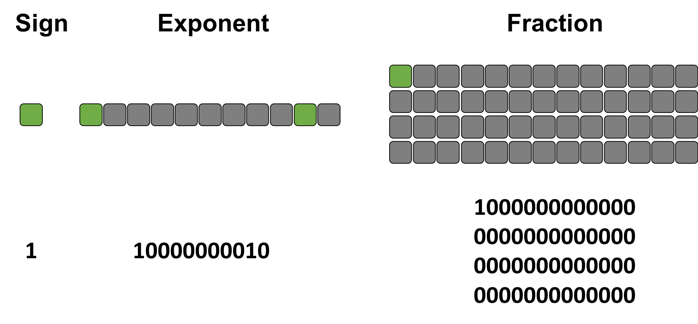

This notebook contains an excerpt from the Python Programming and Numerical Methods - A Guide for Engineers and Scientists, the content is also available at Berkeley Python Numerical Methods.
The copyright of the book belongs to Elsevier. We also have this interactive book online for a better learning experience. The code is released under the MIT license. If you find this content useful, please consider supporting the work on Elsevier or Amazon!
< 9.1 Base-N and Binary | Contents | 9.3 Summary and Problems>
Floating Point Numbers¶
The number of bits is usually fixed for any given computer. Using binary representation gives us an insufficient range and precision of numbers to do relevant engineering calculations. To achieve the range of values needed with the same number of bits, we use floating point numbers or float for short. Instead of utilizing each bit as the coefficient of a power of 2, floats allocate bits to three different parts: the sign indicator, \(s\), which says whether a number is positive or negative; characteristic or exponent, \(e\), which is the power of 2; and the fraction, \(f\), which is the coefficient of the exponent. Almost all platforms map Python floats to the IEEE754 double precision - 64 total bits. 1 bit is allocated to the sign indicator, 11 bits are allocated to the exponent, and 52 bits are allocated to the fraction. With 11 bits allocated to the exponent, this makes 2048 values that this number can take. Since we want to be able to make very precise numbers, we want some of these values to represent negative exponents (i.e., to allow numbers that are between 0 and 1 (base10)). To accomplish this, 1023 is subtracted from the exponent to normalize it. The value subtracted from the exponent is commonly referred to as the bias. The fraction is a number between 1 and 2. In binary, this means that the leading term will always be 1, and, therefore, it is a waste of bits to store it. To save space, the leading 1 is dropped. In Python, we could get the float information using the sys package as shown below:
import sys
sys.float_info
sys.float_info(max=1.7976931348623157e+308, max_exp=1024, max_10_exp=308, min=2.2250738585072014e-308, min_exp=-1021, min_10_exp=-307, dig=15, mant_dig=53, epsilon=2.220446049250313e-16, radix=2, rounds=1)
A float can then be represented as:
\(n = (-1)^s 2^{e-1023} (1+f).\) (for 64-bit)
TRY IT! What is the number 1 10000000010 1000000000000000000000000000000000000000000000000000 (IEEE754) in base10?
The exponent in decimal is \(1 \cdot 2^{10} + 1 \cdot 2^{1} - 1023 = 3\). The fraction is \(1 \cdot \frac{1}{2^1} + 0 \cdot \frac{1}{2^2} + ... = 0.5\). Therefore \(n = (-1)^1 \cdot 2^{3} \cdot (1 + 0.5) = -12.0\) (base10). See the following figure for details.

TRY IT! What is 15.0 (base10) in IEEE754? What is the largest number smaller than 15.0? What is the smallest number larger than 15.0?
Since the number is positive, \(s = 0\). The largest power of two that is smaller than 15.0 is 8, so the exponent is 3, making the characteristic \(3 + 1023 = 1026 (base10) = 10000000010(base2)\). Then the fraction is \(15/8-1=0.875(base10) = 1\cdot \frac{1}{2^1} + 1\cdot \frac{1}{2^2} + 1\cdot \frac{1}{2^3}\) = 1110000000000000000000000000000000000000000000000000 (base2). When put together this produces the following conversion: 15 (base10) = 0 10000000010 1110000000000000000000000000000000000000000000000000 (IEEE754)
The next smallest number is 0 10000000010 1101111111111111111111111111111111111111111111111111 = 14.9999999999999982236431605997
The next largest number is 0 10000000010 1110000000000000000000000000000000000000000000000001 = 15.0000000000000017763568394003
Therefore, the IEEE754 number 0 10000000010 1110000000000000000000000000000000000000000000000000 not only represents the number 15.0, but also all the real numbers halfway between its immediate neighbors. So any computation that has a result within this interval will be assigned 15.0.
We call the distance from one number to the next the gap. Because the fraction is multiplied by \(2^{e-1023}\), the gap grows as the number represented grows. The gap at a given number can be computed using the function spacing in numpy.
import numpy as np
TRY IT! Use the spacing function to determine the gap at 1e9. Verify that adding a number to 1e9 that is less than half the gap at 1e9 results in the same number.
np.spacing(1e9)
1.1920928955078125e-07
1e9 == (1e9 + np.spacing(1e9)/3)
True
There are special cases for the value of a floating point number when e = 0 (i.e., e = 00000000000 (base2)) and when e = 2047 (i.e., e = 11111111111 (base2)), which are reserved. When the exponent is 0, the leading 1 in the fraction takes the value 0 instead. The result is a subnormal number, which is computed by \(n=(-1)^s2^{-1022}(0+f)\) (note: it is -1022 instead of -1023). When the exponent is 2047 and f is nonzero, then the result is “Not a Number”, which means that the number is undefined. When the exponent is 2047, then f = 0 and s = 0, and the result is positive infinity. When the exponent is 2047, then f = 0, and s = 1, and the result is minus infinity.
TRY IT! Compute the base10 value for 0 11111111110 1111111111111111111111111111111111111111111111111111 (IEEE754), the largest defined number for 64 bits, and for 0 00000000001 000000000000000000000000000000000000000000000000000 (IEEE754), the smallest. Note that the exponent is, respectively, e = 2046 and e = 1 to comply with the previously stated rules. Verify that Python agrees with these calculations using sys.float_info.max and sys.float_info.min.
largest = (2**(2046-1023))*((1 + sum(0.5**np.arange(1, 53))))
largest
1.7976931348623157e+308
sys.float_info.max
1.7976931348623157e+308
smallest = (2**(1-1023))*(1+0)
smallest
2.2250738585072014e-308
sys.float_info.min
2.2250738585072014e-308
Numbers that are larger than the largest representable floating point number result in overflow, and Python handles this case by assigning the result to inf. Numbers that are smaller than the smallest subnormal number result in underflow, and Python handles this case by assigning the result to 0.
TRY IT! Show that adding the maximum 64 bits float number with 2 results in the same number. The Python float does not have sufficient precision to store the + 2 for sys.float_info.max, therefore, the operations is essentially equivalent to add zero. Also show that adding the maximum 64 bits float number with itself results in overflow and that Python assigns this overflow number to inf.
sys.float_info.max + 2 == sys.float_info.max
True
sys.float_info.max + sys.float_info.max
inf
TRY IT! The smallest subnormal number in 64-bit number has s = 0, e = 00000000000, and f = 0000000000000000000000000000000000000000000000000001. Using the special rules for subnormal numbers, this results in the subnormal number \((-1)^02^{1-1023}2^{-52} = 2^{-1074}\). Show that \(2^{-1075}\) underflows to 0.0 and that the result cannot be distinguished from 0.0. Show that \(2^{-1074}\) does not.
2**(-1075)
0.0
2**(-1075) == 0
True
2**(-1074)
5e-324
So, what have we gained by using IEEE754 versus binary? Using 64 bits binary gives us \(2^{64}\) numbers. Since the number of bits does not change between binary and IEEE754, IEEE754 must also give us \(2^{64}\) numbers. In binary, numbers have a constant spacing between them. As a result, you cannot have both range (i.e., large distance between minimum and maximum representable numbers) and precision (i.e., small spacing between numbers). Controlling these parameters would depend on where you put the decimal point in your number. IEEE754 overcomes this limitation by using very high precision at small numbers and very low precision at large numbers. This limitation is usually acceptable because the gap at large numbers is still small relative to the size of the number itself. Therefore, even if the gap is millions large, it is irrelevant to normal calculations if the number under consideration is in the trillions or higher.
< 9.1 Base-N and Binary | Contents | 9.3 Summary and Problems>